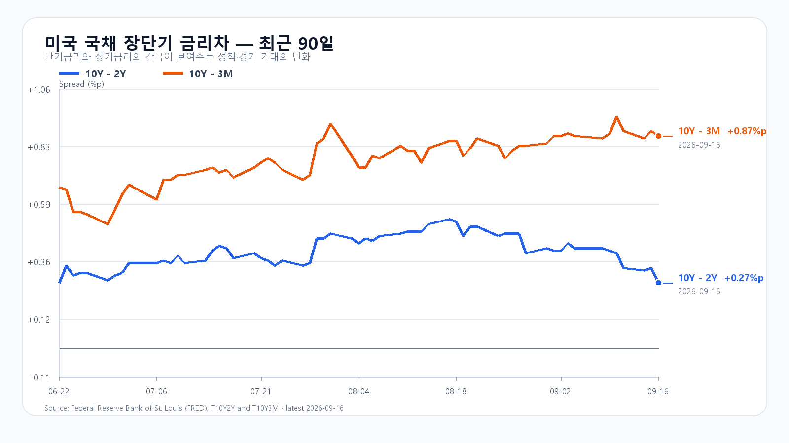
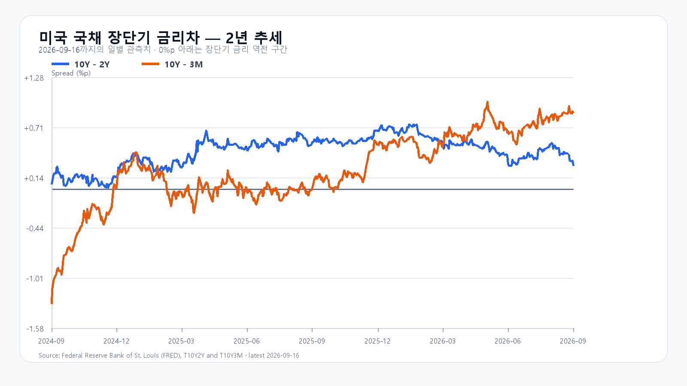

연준이 기준금리를 0.25%포인트 올린 뒤 원/달러 환율이 1,370원대 후반으로 뛰었다. 전날 한국장에서 반등한 삼성전자와 SK하이닉스가 오늘도 상승을 이어 가려면 높아진 금리와 원화 약세 속에서 외국인 매도를 견뎌야 한다.
연준은 9월 16일 정책금리 목표 범위를 3.75~4.00%로 높였다. 위원들은 올해 말 정책금리 중앙값을 4.1%, 올해 개인소비지출 물가 상승률을 3.7%로 제시했다. 이는 한 차례 인상으로 긴축이 끝나리라는 기대에 부담을 준다. 미국의 8월 소매판매도 반등해 경기가 급격히 꺾이지 않았다는 신호를 보냈다. 연준 성명 · 연준 경제전망
뉴욕증시 전체가 일제히 급락한 것은 아니다. 9월 16일 정규장에서 나스닥 종합지수는 거의 보합이었고 SOXX와 SMH는 각각 약 0.64% 올랐다. 엔비디아는 0.82%, AMD는 1.65% 상승했지만 마이크론은 0.11% 내렸다. 반도체 안에서도 메모리주가 똑같이 움직이지 않았다. 미국 ETF 상승에는 이미 끝난 한국장 반등의 후행 반영이 섞일 수 있어 오늘의 상승 재료로 전부 다시 계산할 수 없다. 미국 시세 · 나스닥 마감
국내 반도체의 전날 움직임은 더 뚜렷했다. KOSPI는 9월 16일 6,717.97로 1.37% 올랐고 삼성전자는 253,500원, SK하이닉스는 1,757,000원으로 마감했다. 두 종목은 각각 2.01%, 3.96% 상승했다. 외국인 현물은 순매도를 이어 갔지만 지수는 5거래일 만에 반등했다. 전일 장중 보고서의 기본 종가 상단 6,650을 넘어 강세 범위에 들어갔다. KOSPI · 국내 수급
메모리 현물은 품목별로 갈렸다. TrendForce의 9월 16일 표에서 DDR5 16Gb 평균은 54.833달러로 0.80% 올랐고 DDR4 16Gb는 87.625달러로 1.68% 내렸다. DDR4 8Gb는 0.55% 올랐다. 현물 한 품목의 하루 변화만으로 HBM 계약가격이나 서버 주문을 단정할 수는 없다. 메모리 수요와 오늘 주식 매매를 따로 봐야 한다. TrendForce
연준 결정 뒤 하나은행의 9월 17일 07:27 고시 환율은 달러당 1,377.50원으로 전날보다 1.01% 올랐다. 환율 상승이 이어지면 외국인에게는 전날 국내 주가 반등을 따라 사기 부담스럽다. 반면 08시 전후 미국 주가지수 선물과 국제유가가 급격히 악화한 모습은 아니다. 금리차는 9월 16일 기준 미 국채 10년-2년 +0.27%포인트, 10년-3개월 +0.87%포인트다. 성장주에는 금리차 자체보다 높은 장기금리와 환율의 동행이 더 직접적인 시험이다. 환율 · FRED 10년-2년 · FRED 10년-3개월
오늘 KOSPI 기본 종가 범위는 6,600~6,750, 확률은 50%로 본다. 6,750을 넘어서고 외국인 현물과 프로그램이 함께 순매수로 돌아서면 강세 범위 6,750 초과~6,900으로 올라설 수 있다. 6,600이 무너지고 두 수급이 함께 순매도라면 약세 범위 6,400~6,600 미만을 열어 둔다. 강세 확률은 20%, 약세는 30%다. 이 범위는 조건부 전망이며 확정 시세가 아니다.
| 종가 시나리오 | 범위·확률 | 15시 20분 확인 조건 | 전환 신호 |
|---|---|---|---|
| 기본 | 6,600~6,750 · 50% | 6,600 이상 · 6,750 이하 · 외국인 매도 축소 | 범위 이탈 |
| 강세 | 6,750 초과~6,900 · 20% | 6,750 초과 · 외국인·프로그램 동반 순매수 | 6,750 아래 재진입 |
| 약세 | 6,400~6,600 미만 · 30% | 6,600 미만 · 외국인·프로그램 동반 순매도 | 6,600 회복 |
장중 고저 예상 범위는 6,300~7,000으로 둔다. 종가 범위와 장중 범위의 목표 신뢰수준은 각각 90%이며 과거 적중률을 뜻하지 않는다. 대응 점수는 공격 20, 관망 45, 방어 35다. KODEX 레버리지는 전일 저가 99,115원을 1차 지지, 종가 103,580원을 반등 기준, 고가 103,615원을 저항으로 본다. 가격이 이 기준을 지키는지와 외국인 수급이 돌아서는지를 함께 봐야 한다.
장전 가격
| 항목 | 가격·변화 | 출처 시각 |
|---|---|---|
| KOSPI 전일 종가 | 6,717.97 · +1.37% | 2026-09-16 정규장 종가 |
| KODEX 레버리지 전일 종가 | 103,580원 · +3.90% | 2026-09-16 정규장 종가 |
| 삼성전자 NXT | 254,000원 · 0.20% | 2026-09-17T08:13:13.27337+09:00 |
| SK하이닉스 NXT | 1,755,000원 · -0.23% | 2026-09-17T08:13:13.273379+09:00 |
| 달러/원 하나은행 고시 | 1,377.50원 · 1.01% | 2026-09-17T07:27:59+09:00 |
| Nasdaq100 선물 | 29,353.50 · +0.331% | 2026-09-17T08:03:07+09:00 · 지연 시세 |
| S&P500 선물 | 7,636.50 · +0.177% | 2026-09-17T08:03:12+09:00 · 지연 시세 |
| 브렌트 선물 | 105.61 · -0.208% | 2026-09-17T08:02:00+09:00 · 지연 시세 |
| WTI 선물 | 102.01 · -0.410% | 2026-09-17T08:02:41+09:00 · 지연 시세 |
NXT · 환율 · Nasdaq100 선물 · S&P500 선물
NXT는 대체거래소 장전 거래, 미국 선물은 지연 시세다.

